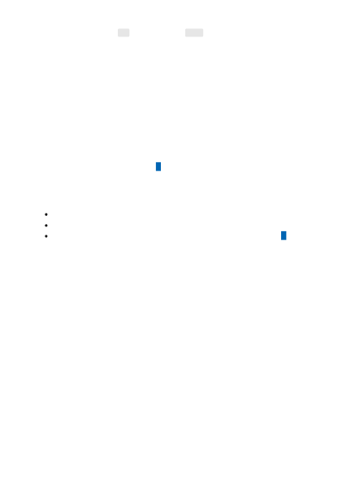

In this example once the token count is reached the oldest messages in the conversation
transcript will be removed. del is used instead of pop() for efficiency, and we start at
index 1 so as to always preserve the system message and only remove user/assistant
messages. Over time, this method of managing the conversation can cause the
conversation quality to degrade as the model will gradually lose context of the earlier
portions of the conversation.
An alternative approach is to limit the conversation duration to the max token length or
a certain number of turns. Once the max token limit is reached and the model would
lose context if you were to allow the conversation to continue, you can prompt the user
that they need to begin a new conversation and clear the messages array to start a
brand new conversation with the full token limit available.
The token counting portion of the code demonstrated previously, is a simplified version
of one of OpenAI's cookbook examples .
Learn more about Azure OpenAI.
Get started with the ChatGPT model with the ChatGPT quickstart.
For more examples, check out the Azure OpenAI Samples GitHub repository
Next steps